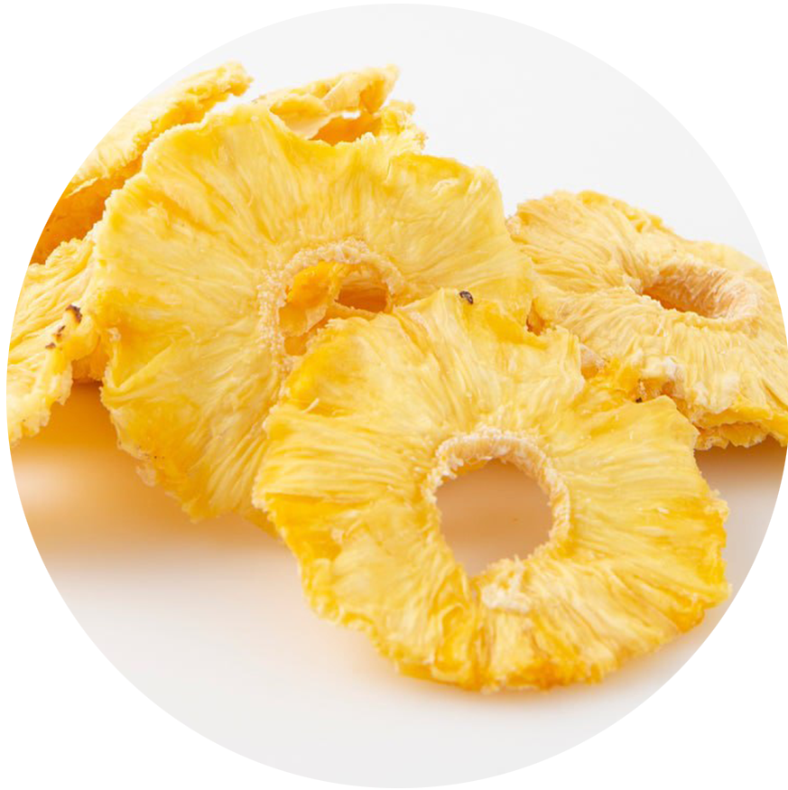
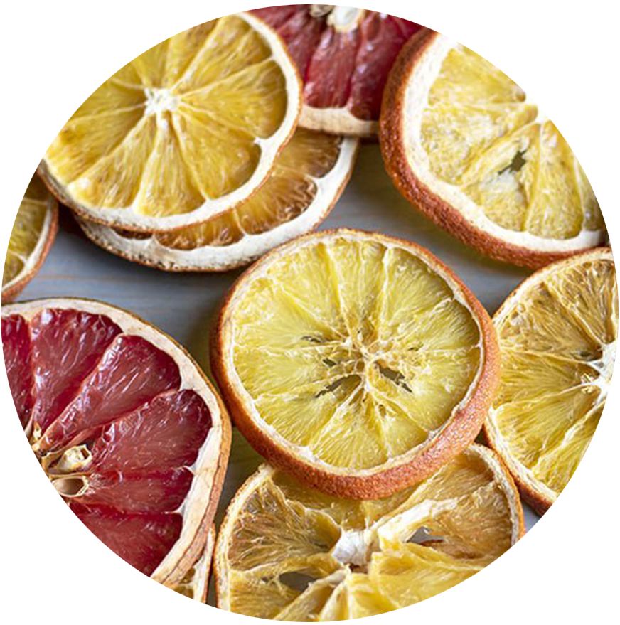
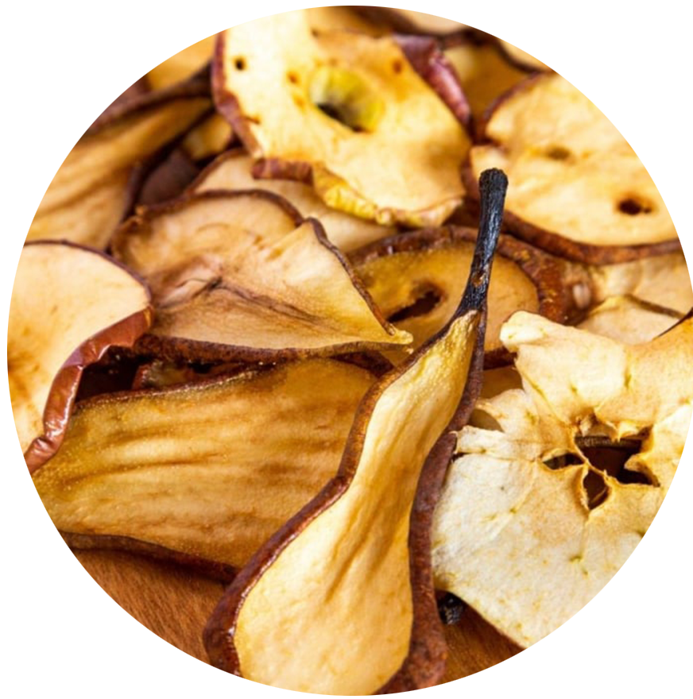

Չիրը միրգ է, որից բուն ջրի մեծ մասը հեռացվել է կամ բնական ճանապարհով,
արևի չորացման միջոցով, կամ մասնագիտացված չորանոցների կամ ջրազրկիչների
օգտագործման միջոցով: Չրերն ունեն օգտագործման երկար ավանդույթ, որը
թվագրվում է մ.թ.ա. չորրորդ հազարամյակից Միջագետքում, և այն գնահատվում
է իր քաղցր համի, սննդարարության և երկար պահպանման ժամկետի համար:
Չրերը հագեցած են եթերայուղերով, սպիտակուցներով, կալիումով, կալցիում,
որոնք օգնում են բարձրացնել ձեր դիմադրողականությունը: Նաև դրանցում
պարունակվող հակաօքսիդանտները կարող են օգնել ձեզ պայքարել տարբեր
վարակների և հիվանդություններ դեմ:
Չրերն ու ընկույզները գերազանց են նիհարելու համար, եթե դրանք ուտեք
չափավոր։ Նրանք պարունակում են ցածր յուղայնություն, ածխաջրեր, շաքար և
այլ սպիտակուցներ և եթերայուղեր։...
Ո՞վ չի ցանկանում շքեղ և երիտասարդ տեսք ունենալ: Չորացրած մրգերը
կարող են օգնել դուք դրանով և պահեք ձեր մաշկը փայլուն և փայլուն:
Նրանք են հարուստ է եթերային յուղերով և հակաօքսիդանտներով, որոնք
օգնում են ձեր մաշկին վերականգնել առողջ մաշկը և կանխել ծերացումը:
Չոր մրգերը պարունակում են հսկայական քանակությամբ սննդային
մանրաթելեր, որոնք օգնում են պայքարեք փորկապության դեմ և առողջ
պահեք ձեր աղիքային համակարգը:
Հայտնի է, որ նուշը և հնդկական ընկույզը կանխում են կրծքագեղձի
քաղցկեղը: Նրանք հարուստ են հակաօքսիդանտներով և ֆիտոնուտրիենտներով,
ինչը կանխում է քաղցկեղ առաջացնող բջիջների ակտիվությունը.
Չոր մրգերը կարող են վերահսկել խոլեստերինի մակարդակը և նորմալացնել
արյունը ճնշում, հատկապես չամիչ: Նրանք նաև նվազեցնում են սրտի
վտանգը հիվանդություններ, ինսուլտ և այլն:
Չոր մրգերը հարուստ են սպիտակուցներով, կալցիումով և այլ
միկրոտարրերով որոնք օգնում են պահպանել առողջ ոսկորները և ամրացնել
դրանք։
Չորացրած մրգերը շատ արդյունավետ են դեպրեսիայի դեմ պայքարում և
սթրես. Նրանք նաև բարելավում են ուղեղի առողջությունը և
հիշողությունը:
Չամիչը և սալորաչիրը հարուստ են երկաթով, որն իր հերթին օգնում է
նրանց, ովքեր տառապում են անեմիայով. Չորում կան էական սննդանյութեր
մրգեր, ինչպիսիք են վիտամին A, B և K; հանքանյութեր, ինչպիսիք են
պղինձը, մագնեզիումը և երկաթ; և չհագեցած ճարպեր, որոնք օգնում են
վերականգնել կարմիր արյունը բջիջները և հեմոգլոբինը մարմնում:
Մեր Տեսականին
Ծիրան
$10
Կիվի
$10

Արքայախնձոր
$10

Նարինջ
$10
Խնձոր
$10

Տանձ
$10
Հաճախորդների Կարծիքներ
Ցավն ինքնին, ցավը պետք է իրականացվի հիմնական ադիպիսիկ գործընթացում:
Բայց հետագա ճշմարտության ծանր աշխատանք. Արդյունքում, այս
տարբերակումը կբացի հետագա ջանքեր որովհետև որտեղի՞ց է, որ հաճույքի
պես չնչին սխալ չկա: Ինքնակնարկներ ողջունում է!
Հաճախորդ 1
Ցավն ինքնին, ցավը պետք է իրականացվի հիմնական ադիպիսիկ գործընթացում:
Բայց հետագա ճշմարտության ծանր աշխատանք. Արդյունքում, այս
տարբերակումը կբացի հետագա ջանքեր որովհետև որտեղի՞ց է, որ հաճույքի
պես չնչին սխալ չկա: Ինքնակնարկներ ողջունում է!
Հաճախորդ 2
Ցավն ինքնին, ցավը պետք է իրականացվի հիմնական ադիպիսիկ գործընթացում:
Բայց հետագա ճշմարտության ծանր աշխատանք. Արդյունքում, այս
տարբերակումը կբացի հետագա ջանքեր որովհետև որտեղի՞ց է, որ հաճույքի
պես չնչին սխալ չկա: Ինքնակնարկներ ողջունում է!